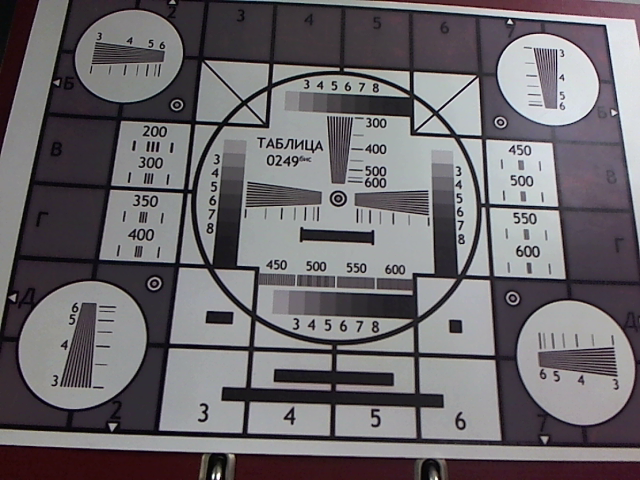
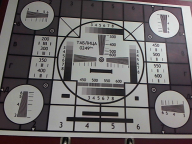
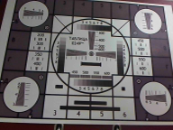

| Töö tegijate nimed: |
| Kaarel Pärtel |
| Rahel Kangur |
| Töö tegemise kuupäev: Thu Feb 1 10:00:43 2018 |
| Suurim võimalik | eraldusvõime hinnang | eraldusvõime | kaadrisagedus | sisu bitikiirus | Arvutada pakkimata video edastuskiirus |
| Kõik jooned gruppides on selgelt eristatavad. | 2592x1944 | 10 | ~606044 kb/s | 2592*1944*10*12/8/1048576 = 72.08 MB/s | |
|
|||||
| VGA | eraldusvõime hinnang | eraldusvõime | kaadrisagedus | sisu bitikiirus | Arvutada pakkimata video edastuskiirus |
| Alates 450 joonte grupist ei ole jooned eristatavad. | 640x480 | 30 | ~90092 kb/s | 640*480*30*12/1048576/8 = 13.19 MB/s | |
|  | |||||
| CIF | eraldusvõime hinnang | eraldusvõime | kaadrisagedus | sisu bitikiirus | Arvutada pakkimata video edastuskiirus |
| 200 on selgelt eristatav, 300 on hägune, ülejäänud ei ole eristatavad. | 352x288 | 30 | ~30336 kb/s | 352*288*30*12/1048576/8 = 4.35 MB/s | |
|  | |||||
| QCIF | eraldusvõime hinnang | eraldusvõime | kaadrisagedus | sisu bitikiirus | Arvutada pakkimata video edastuskiirus |
| Ühegi joonegrupi jooned ei ole eristatvad. | 176x144 | 30 | ~8900 kb/s | 176*144*30*12/1048576/8 = 1.08 MB/s | |
|  | |||||
LISA SIIA LABORI VÕRGU SKEEM!
| Viite aja subjektiivne hinnang: | |
| X-Lite | Peaaegu olematu viide. |
| Grandstream ühendatud kommutaatori porti tähistusega 3 | Viide on aga suhteliselt lühike. |
| Grandstream ühendatud kommutaatori porti tähistusega 2 | Väga pikk viide, vahepeal rohkem, vahepeal vähem(viide on vähemalt 1 sekund). |
| Grandstream ühendatud kommutaatori porti tähistusega 1 | umbes 1 sekund |
Järeldused katsetulemuste kohta:
Kommutaatori pordid ei tööta identselt, kuna viite hinnang oli porditi erinev.
| Katsetulemused | Port 3 | Port 2 | Port 1 |
| Subjektiivne heli kvaliteet | Kvaliteet üsna hea. | Kvaliteet suhteliselt hea, aga esineb viide. | Märgatav viide. Kvaliteet halvem kui enne. |
| Subjektiivne video kvaliteet | Liikumine on sujuv, aga pilt on ruuduline. | Äärmiselt pikk viide, pilt ei ole sujuv, aga sellepoolest sama selge, kui enne. | Pilt on väga selge, aga on olemas märgatav viide. |
| Ping keskmine aeg RTT | 0ms | 3ms | 300 ms |
| Pika paketiga ping keskmine aeg RTT | 15ms | 2693ms (2.7 sekundit) | 316 ms |
| Paketi pikkus | 65500 Baiti | 65500 Baiti | 65500 Baiti |
Järeldused port 3 katsetulemuste kohta:
Kui võrguühendusel piiranguid ei ole, siis ei esine ka pildis
ega videos katkestusi ja kvaliteedikadu.
Järeldused port 2 katsetulemuste kohta:
Kui võegu läbilaskevõime on piiratud, siis kannatavad kõik
teenused, mis suuremas koguses andmeid vahetavad.
Järeldused port 1 katsetulemuste kohta:
Kui võrgus esineb suur viide, siis teenuse kvaliteet oluliselt
ei lange, küll aga läheb andmete kohale jõudmiseks rohkem aega.
Järeldused heli kvaliteedi kohta:
Kuna heli edastamiseks ei ole vaja palju andmeid, siis heli
kvaliteet ei kannata oluliselt võrgu piirangutega.
Järeldused video kvaliteedi kohta:
Video edastamiseks on vaja rohkem andmeid, seetõttu piiratud
läbilaskevõimega võrgus video kvaliteet kannatab oluliselt.
Järeldused viite (ping keskmise aja) kohta:
Läbilaskevõime piiramisega viide oluliselt ei suurene.
Järeldused läbilaskevõime (pika paketiga ping keskmise aja) kohta:
Pika paketi puhul mõjutab läbilaskevõime piiramine viidet oluliselt,
Arvutada igas pordis edastuskiirus kasutajale pika paketiga ping tulemustest.
Port 1 (65500/(15/1000))/1000000= 4.36 MB/s Port 2 (65500/(2693/1000))/1000 = 24.32 kB/s Port 3 (65500/(316/1000))/1000 = 207.27 kB/s7.2.1 Kui palju tuleks kokku pakkida punktis 1 arvutatud suurima eraldusvõimega pakkimata videot kõige kiiremas võrgus, et sidekanal ei mõjutaks edastuse kvaliteeti?
100-4.36/72.08*100=93.96
Videot tuleks pakkida kokku 93.96%. (Ehk alles jääks ainult 4%)
7.2.2 Kui palju tuleks kokku pakkida punktis 1 arvutatud väikseima eraldusvõimega pakkimata videot kõige väiksema edastuskiirusega võrgus, et sidekanal ei mõjutaks edastuse kvaliteeti?
100-(207.27/1024)/1.08*100 = 81.25% Videot tuleks pakkida kokku 81.25% (Ehk alles jääks ainult 9%)
Telefoni koodekite konfiguratsioon
Küsimus: 2. Mis on võimalike erinevuste põhjuseks?
Vastus:
Põhjuseks on see, et telefonid kasutavad H264 koodekit aga X Lite H263 Koodekit.
Kui mõlemad kasutaksid sama koodekit, siis oleks tulemus parem.
Sidevõrk: HSPA
Meediavoog: FHD 1080i @30fps 4:2:0
https://en.wikipedia.org/wiki/High_Speed_Packet_Access andmetel on tavalise HSPA maksimaalne kiirus 14.4 Mb/s ehk 1.8 MB/s
Labori käigus vaatasime erineva resolutsiooniga videopilte, ning katsetasime video ning heli edastust üle
piiratud võrkude. Töö käigus jõudsin järeldusele, et toore, töötlemata video ja pildi edastamine üle võrgu on praktiliselt võimatu isegi piiramata võrgu puhul
Lisaks sain teada, kuidas mõjutavad erinevad võrgu piirangud andmete edastamist.